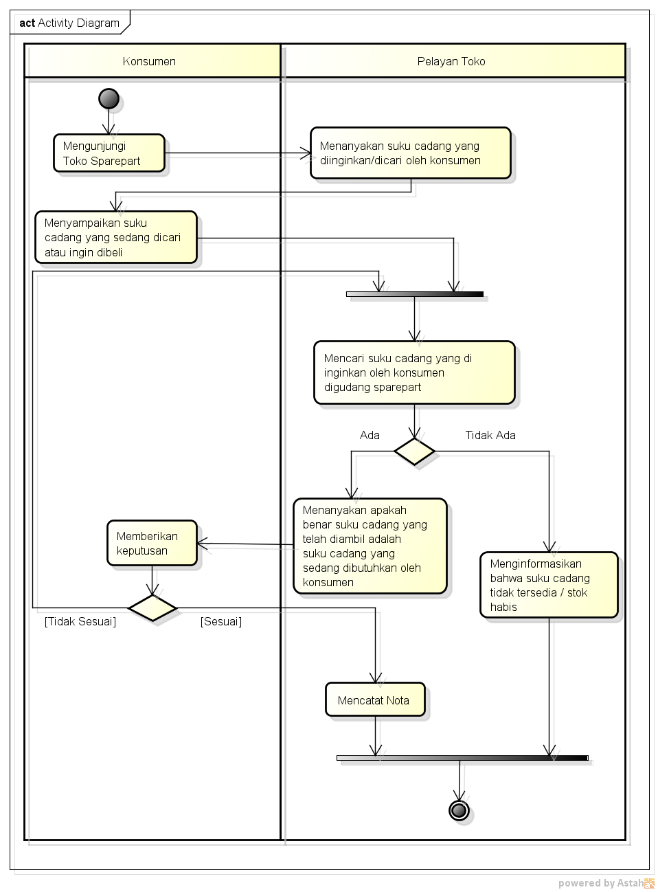

NIM : 1811500114
NAMA : MAMAN ABDURAHMAN
KELOMPOK : TI6A
Hasil saya menyadur di pertemuan 2 :
- 1. Setiap pertemuan diwajibkan membuat folder sesuai dengan pertemuan
- 2. Perhitungan nilai kehadiran cukup membuat file index.html di setiap direktori setiap pertemuan github (angka), contoh anperrpl/2/index.html untuk pertemuan 2
- 3. perhitungan nilai tugas yaitu dari kualitas file index.html setiap pertemuan yang kita sadur
- 4. Pengenalan diagram activity dan cara menganalisa study kasus
- 5. Pertemuan Kedua kita belajar tentang cara menganalisa sistem berjalan pada sebuah studi kasus
- 6. untuk langkah pertama dalam menyelesaikan studi kasus yaitu kita harus menganalisa terlebih dahulu kasus apa yang telah terjadi
- 7. Setelah selesai menganalisis studi kasus kita mencoba menggambarkan proses analisis sistem berjalan ke dalam bentukj diagram UML atau diagram activity dengan menggunakan software yang telah disediakan yaitu Astah Community
- 8. Menyimpan file astah dan menyimpan screnshoot projek astah
- 9. Cara menyimpan screnshoot astah yaitu klik ctrl+all, lalu klik kanan lalu copy to clipboard, selanjutnya membuka paint lalu pastekan,crop dan save
- 10. langkah menyimpan pada github yaitu dengan cara klik add file, upload files, lalu drag file yang ingin di upload dan commit
Hasil Projek Astah Download
